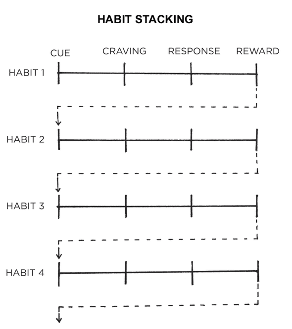

Implementaiotn intention is a plan you make beforehand baout what and wehre to act -- how you intend to implement a particular habt. The broad format is: "When situation X arises, I will perform response Y." A simple way to plan your implementaion intentions is to write the out using the template of this sentence: I will [BEHAVIOR] at [TIME] in [LOCATION
The goal of habit staking is to tie you desired behavior into something you alread do each day. You can then create larger stacks of habits by chaining small habits together.
Habit stacking increases the likelihood that you'll stick with a habit by stacking your new behavior on top of an old one. This process can be repeated to chain numerous habits together, each one oacting as the cue for the next.